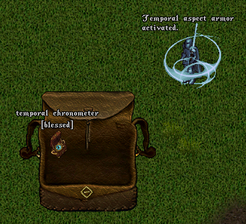
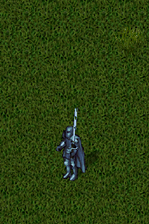
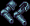
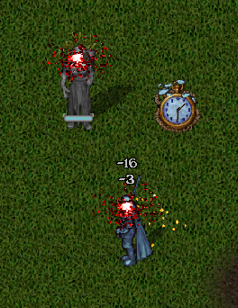

时空（Temporal）是 Outlands 26 种元素之一，围绕使用「时空计时器（Temporal Chronometer）」生成「时空力场（Temporal Field）」展开：身处力场半径内可获得伤害与防御加成。武器与魔法书可触发「静止 Stasis」造成直接伤害并定身目标。
时空元素武器（Temporal Aspect Weapon）提供以下加成：
| 加成项 | 效果 |
|---|---|
| 近战命中加成 (Melee Accuracy Bonus) | 10% + 每阶位 2% |
| 战术加成 (Tactics Bonus) | 10 + 每阶位 2 |
| 特殊特效触发几率 (Aspect Special Chance，随武器速度缩放) | 0.5% + 每阶位 0.05% |
特殊特效（Aspect Special Effect）：静止 Stasis
时空元素魔法书（Temporal Aspect Spellbook）提供以下加成：
| 加成项 | 效果 |
|---|---|
| 法力返还几率 (Mana Refund Chance) | 10% + 每阶位 2% |
| 伤害加成 (Damage Bonus) | 10% + 每阶位 2% |
| 特殊特效触发几率 (Aspect Special Chance，随法术环缩放) | 4% + 每阶位 0.4% |
特殊特效（Aspect Special Effect）：静止 Stasis（与武器相同）



时空元素护甲（Temporal Aspect Armor）提供以下加成：
| 加成项 | 效果 |
|---|---|
| 护甲值加成 (Armor Rating Bonus) | 20% + 每阶位 5% |
| 伤害加成（2 秒内阶梯式提升） | 10% + 每阶位 3.5% |
| 伤害减免与伤害延迟（2 秒） | 5% + 每阶位 1.5% |
| 躲避移动效果的几率 (Chance to Avoid Movement Effects) | 15% + 每阶位 4% |
时空元素在 PvP 旗帜状态下：停用（Deactivated）无变化；启用（Activated）无变化。

时空元素围绕使用「时空计时器 Chronometer」生成「时空力场 Temporal Field」展开，身处力场半径内可获得伤害与防御（Damage Resistance）加成。
[Temporal / [TemporalField 命令，可在原地生成时空力场。[TemporalSettings 命令，选择激活时不自动生成时空计时器。[Commands 页面的元素（Aspect）分类下查看时空设置。本页所有数值均随玩家自身的时空阶位（Temporal Tier Level）变化。具体阶位数值以官方 Discord 补丁公告为准。